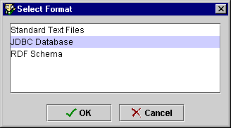
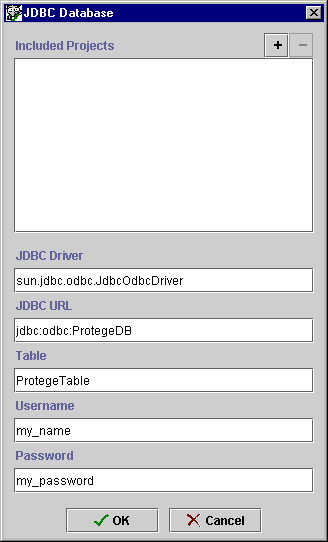

Importing a
Database Table
Importing a
Database Table

- Select Import Project... from the Project
menu.
- Select JDBC Database from the Select Format dialog box and click
OK.

-
A JDBC Database dialog box is displayed.

- Enter the name of your JDBC driver in the JDBC Driver line of the
dialog box.
- Enter the URL for your database in the JDBC URL line.
- Enter the name of the table that contains the information you wish to
import.
- If your database requires a username and/or password, enter these in the
appropriate lines of the dialog box.
Protégé-2000 will create a project file from your class and instance
information. To save your project and give it a name, select Save from
the Project menu. See Saving a Project
for more information.
Next: Importing RDF Files
Project Table of Contents